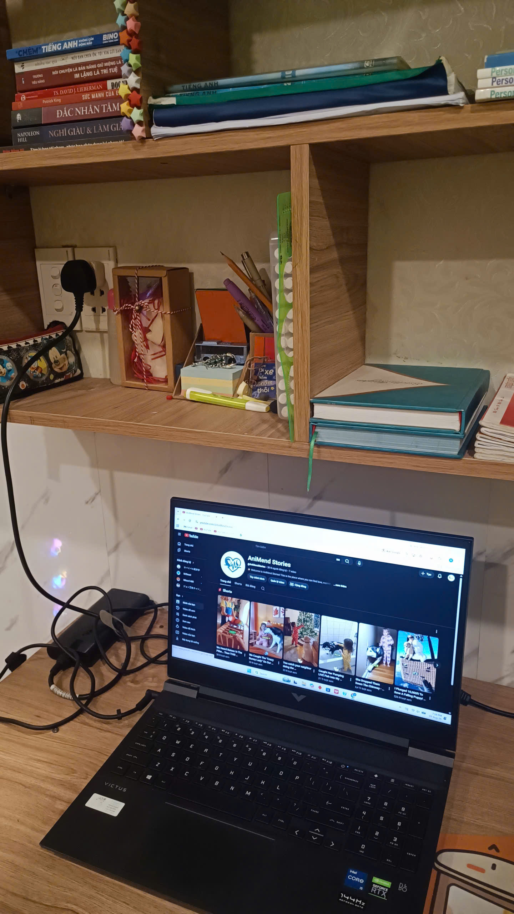

Mình còn nhớ khoảng thời gian cuối năm hai đại học. Khi ấy, mình vừa quyết định nghỉ công việc part-time tại một nhà hàng tiệc cưới. Công việc đã khiến mình kiệt sức và có những lúc cảm thấy bản thân gần như không còn năng lượng cho những điều mình thật sự yêu thích. Vì vậy, mình quyết định tạm nghỉ làm để ở nhà và bắt đầu xây dựng một kênh YouTube, đơn giản chỉ vì mình muốn thử sức với điều mà mình đam mê.
Nhưng bắt đầu từ đâu thì mình hoàn toàn không biết.
Mình phải tự tìm hiểu mọi thứ, từ cách xây dựng một kênh YouTube, lên ý tưởng nội dung, quay và chỉnh sửa video cho đến cách thu hút người xem. Khoảng thời gian ấy thực sự không dễ dàng. Có những ngày mình ngồi hàng giờ trước máy tính nhưng vẫn chẳng biết mình đang đi đúng hướng hay không. Cũng có những lúc mình từng nghĩ đến chuyện bỏ cuộc.
Thế nhưng, có lẽ chính niềm đam mê đã khiến mình tiếp tục.

Góc làm việc nhỏ - nơi những video đầu tiên ra đời.Rồi ngày mình chờ đợi cũng đến. Video đầu tiên được đăng lên kênh. Lúc ấy mình háo hức vô cùng, cứ nghĩ rằng video của mình sẽ nhanh chóng có thật nhiều người xem. Nhưng rồi thực tế lại phũ phàng hơn mình tưởng. Những video đầu tiên chỉ có vài chục, vài trăm lượt xem. Có những lúc mình nhìn con số view mà thấy khá nản.
Nhưng thay vì bỏ cuộc, mình bắt đầu xem lại từng video, tìm hiểu những điều mình làm chưa tốt và cố gắng cải thiện ở những video tiếp theo.
Đúng như câu nói: “Có công mài sắt, có ngày nên kim.”
Sau một khoảng thời gian kiên trì, những video của mình bắt đầu có nhiều lượt xem hơn. Rồi một ngày, mình bất ngờ khi có những video đạt đến hàng triệu lượt xem. Kênh YouTube cũng bắt đầu mang lại cho mình một khoản thu nhập đáng kể. Đó là khoảnh khắc mình nhận ra rằng những ngày tháng tự học, những lần thất vọng và cả những lúc muốn bỏ cuộc trước đây đều thật sự có ý nghĩa.
Nhưng cuộc sống không phải lúc nào cũng diễn ra theo cách mình mong muốn.
Sau đó, mình gặp một số biến cố khiến mình không thể tiếp tục dành thời gian để phát triển kênh. Cuối cùng, mình đành tạm gác lại đam mê để tập trung cho công việc và việc học, bởi lúc ấy mình cũng đang dần bước đến những năm tháng cuối cùng của đời sinh viên.
Đến bây giờ, nhìn lại hành trình ấy, mình không cảm thấy tiếc nuối. Bởi dù kênh YouTube đã phải dừng lại, mình vẫn nhận được rất nhiều thứ: kinh nghiệm, những bài học về sự kiên trì và quan trọng nhất là cảm giác tự hào khi biết rằng mình đã từng dám bắt đầu một điều gì đó từ con số 0.
Có thể hiện tại mình đã tạm dừng phát triển kênh, nhưng mình tin rằng đam mê ấy vẫn còn ở đâu đó trong mình. Biết đâu một ngày nào đó, khi mọi thứ ổn định hơn, mình sẽ lại bắt đầu.